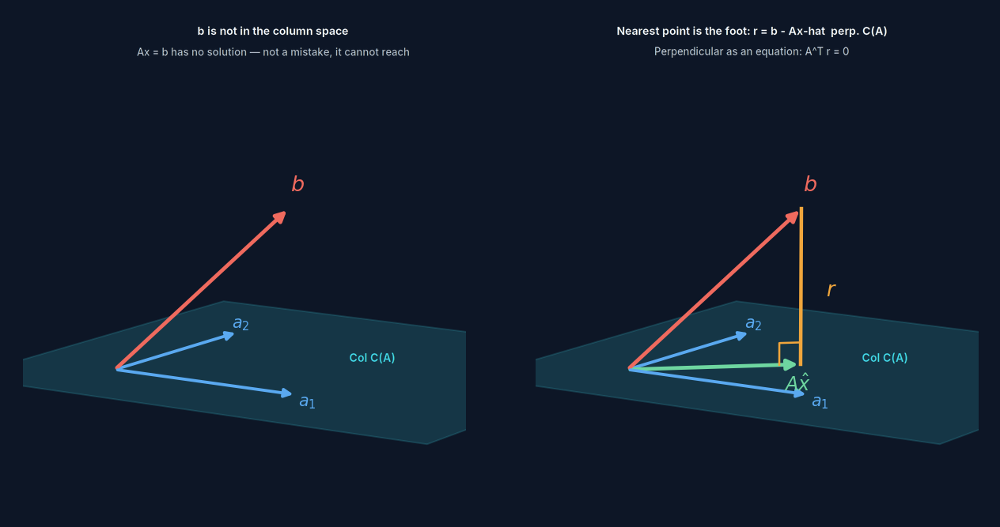
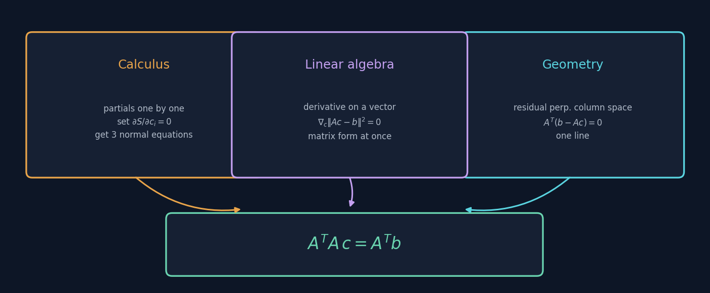
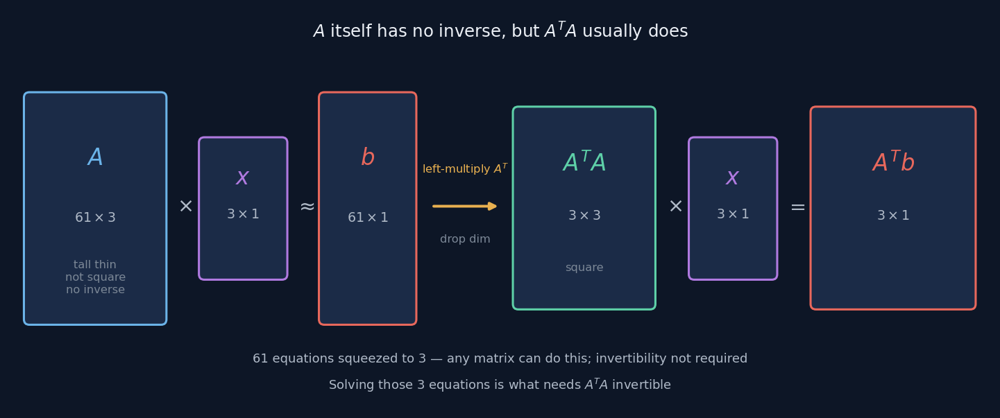
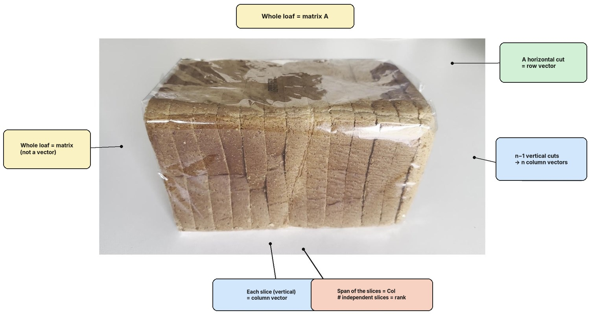
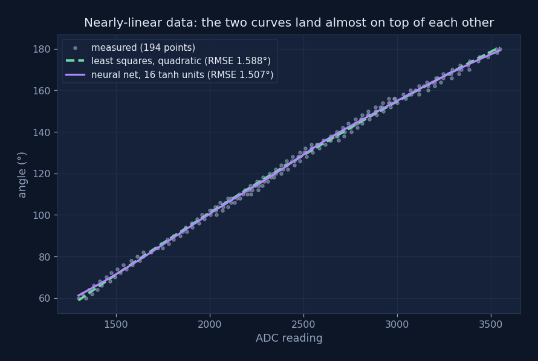
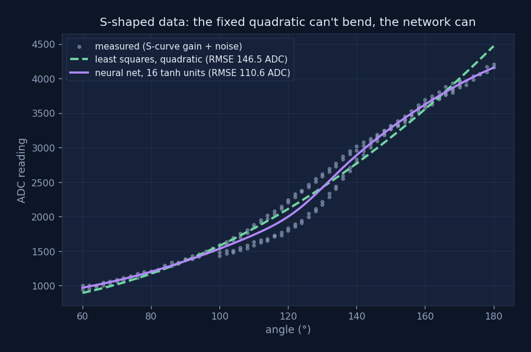
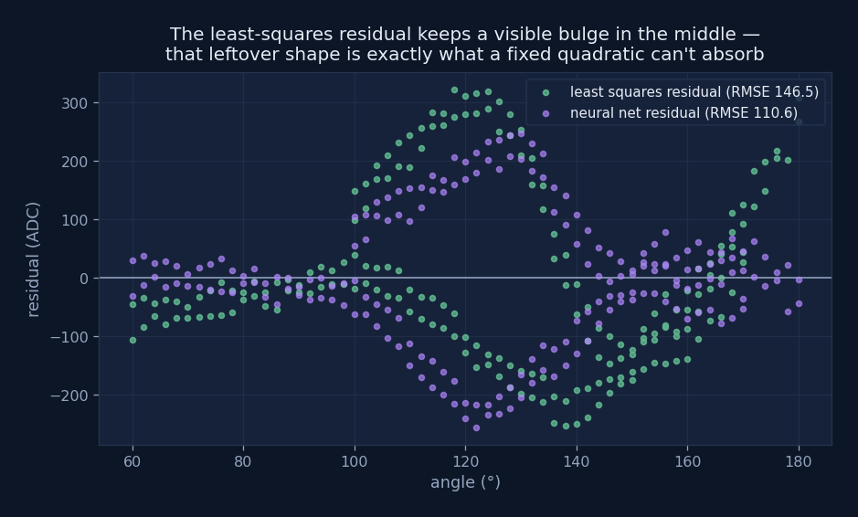

Fitting & Least Squares
When $\mathbf b$ can't reach the column space, the equation has no solution —
not because anything went wrong, it was simply out of range.
So settle for the next best thing: find the closest point you actually can reach.
The last section showed $A\mathbf x=\mathbf b$ has a solution exactly when $\mathbf b$ lies in the column space.
This section is about what to do when it doesn't — and in practice, real data almost never lands exactly where you'd want.
Where the problem comes from
The servo calibration page measured 61 points and wanted to fit a cubic curve — that's solving for 4 coefficients. Written as an equation system, that's 61 equations, 4 unknowns.
Far more equations than unknowns — this is called overdetermined. Unless all 61 points happened to land exactly on the same cubic curve — with measurement noise and mechanical backlash, that's not going to happen — there's no exact solution.
But "no solution" clearly isn't the answer anyone wants. The servo still has to turn; that function still has to go in the firmware. So the question needs rephrasing: since $\mathbf b$ is out of reach, which reachable point is closest?
The closest point is the foot of a perpendicular

Left: $\mathbf b$ hangs outside the column space — no adjustment of $\mathbf x$ ever
reaches it.
Right: the closest point in the column space to $\mathbf b$ is its foot of the
perpendicular onto that plane.
Why a perpendicular foot? Because if the residual $\mathbf r=\mathbf b-A\hat{\mathbf x}$ weren't perpendicular to the column space, it would still have some component lying inside it — nudge along that direction and you'd get closer still. Once you can't nudge any further, only the perpendicular component is left.
The whole chain of reasoning, five steps
$A\mathbf x\approx\mathbf b$ $\;\to\;$ the closest point is the projection $A\hat{\mathbf x}=\mathrm{proj}_{C(A)}\mathbf b$ $\;\to\;$ residual $\mathbf r=\mathbf b-A\hat{\mathbf x}$ $\;\to\;$ $\mathbf r\perp C(A)$, meaning $\mathbf r$ is perpendicular to every column of $A$ $\;\to\;$ written as a matrix, that's $A^{\mathsf T}\mathbf r=\mathbf 0$
Substitute $\mathbf r=\mathbf b-A\hat{\mathbf x}$ into that last step:
The Normal Equations
A geometric condition — "perpendicular" — turns, step by step, into an equation you can just solve. And the algebraic form of "perpendicular" is a dot product equal to zero — the thing the first section covered, cashed in right here.
Three roads, one equation
This equation doesn't have just one derivation. Three completely different roads arrive at the same destination:

| Viewpoint | How it's done | Upside | Cost |
|---|---|---|---|
| Calculus | Take the partial derivative of the residual sum of squares $S$ with respect to each coefficient, set each to zero | Only needs high-school calculus, easy for anyone to follow | Gets unwieldy as the number of coefficients grows |
| Linear algebra | Differentiate with respect to the whole vector, $\nabla_{\mathbf x}\lVert A\mathbf x-\mathbf b\rVert^2=0$ | One step to the matrix form, regardless of how many coefficients | Requires accepting vector calculus notation first |
| Geometry | The residual is perpendicular to the column space | One line, and you can actually see it | Requires understanding the column space first |
The fact that three completely unrelated approaches converge on the same equation is itself worth noticing: when a formula can be derived from three independent directions, it's usually caught hold of something real, not just a trick.
But A doesn't have an inverse
Here's a spot where almost everyone gets stuck. If you're solving $A\mathbf x=\mathbf b$, why not just multiply both sides by $A^{-1}$?
Because $A$ here is 61×4, not square, and simply has no inverse. An inverse means being able to undo a transformation exactly as it came — and $A$ squeezes a 4-dimensional space into a thin 4-dimensional slice sitting inside 61-dimensional space. Almost every vector in that 61-dimensional space is out of reach; there's nothing to undo.

The clever part of the normal equation is that it splits the job into two steps:
Step one: $A^{\mathsf T}$ shrinks the number of equations
Left-multiply by $A^{\mathsf T}$ and 61 equations become 4. Any matrix can do this step — no inverse required. It's just taking the dot product of each column with the residual.
Step two: $(A^{\mathsf T}A)^{-1}$ solves out the coefficients
After the squeeze, $A^{\mathsf T}A$ is 4×4 — this is the step that needs an inverse. And as long as $A$'s columns are linearly independent, it has one.
$A^{\mathsf T}$ does the job of shrinking the equations; $(A^{\mathsf T}A)^{-1}$ does the job of solving for the coefficients.
$A$ itself never had an inverse, because there was never any "undoing the whole 61-dimensional transformation" to be done.
Put both steps together under one symbol and you get the pseudoinverse $A^{+}=(A^{\mathsf T}A)^{-1}A^{\mathsf T}$. The "pseudo" in the name is exactly this: it's not a true inverse, just the best possible undoing within the range you can actually reach.
A matrix is not a vector
Worth clearing up one thing in passing. $A$ is a matrix, not a vector and not a pile of loose numbers — it's a stack of column vectors.

The whole loaf is the matrix $A$. Slice it once, vertically, and you get one slice — a column vector. Everything those slices can span is the column space, and the number of genuinely distinct slices is the rank — two identical slices only count once.
One more thing worth flagging: the $\mathbf 0$ in $A\mathbf x=\mathbf 0$ is not the number zero, it's the zero vector. It stands for $m$ separate equals signs, each with a zero on the right — not one line where "everything added up comes to zero." This distinction matters a lot when you're checking for linear dependence.
Four ideas
Residual
- What it is
- $\mathbf r=\mathbf b-A\hat{\mathbf x}$, the gap between the measured value and the fitted value.
- What it measures
- The part the model can't explain. It's always perpendicular to the column space — if it weren't, the fit hasn't been optimised yet.
- Where it sits
- $\mathbf b$ splits into two halves: one lies in the column space (what the model can explain), the other is perpendicular to it (what it can't). That split is unique.
- When it's zero
- The data happens to sit exactly on the model — $\mathbf b$ was already in the column space. Almost never happens with real data.
Overdetermined
- What it is
- More equations than unknowns. Servo calibration is 61 equations, 4 unknowns.
- What it measures
- Data being "richer" than the model. That richness isn't a flaw — it's exactly what fights back against noise.
- Where it sits
- Contrasted with exactly determined (equations = unknowns, unique solution) and underdetermined (fewer equations than unknowns, infinitely many solutions). The S-curve's 6 conditions and 6 coefficients is exactly determined.
- Flip it around
- Fewer data points than coefficients, and the fitted curve passes through every point perfectly — but that isn't fitting, that's overfitting.
Normal Equations
- What it is
- $A^{\mathsf T}A\hat{\mathbf x}=A^{\mathsf T}\mathbf b$. "Normal" here means "perpendicular," not "ordinary."
- What it measures
- It packages up the $n$ conditions "the residual is perpendicular to every column" into a single system of equations.
- Where it sits
- $A^{\mathsf T}A$ is exactly the Gram matrix from the previous section — symmetric, positive semidefinite. $\mathbf x^{\mathsf T}A^{\mathsf T}A\mathbf x=\lVert A\mathbf x\rVert^2$ — that's the whole reason it exists.
- When the solution isn't unique
- $A$'s columns are linearly dependent, $A^{\mathsf T}A$ isn't invertible. There's redundancy among the variables in your data, and a numerical library will hand you the minimum-norm solution.
Condition Number
- What it is
- A measure of how close a matrix is to singular. The larger it is, the more sensitive the solution is to small changes in the input.
- Why it matters here
- Because the condition number of $A^{\mathsf T}A$ is the square of $A$'s. A problem that was reasonably well-behaved can become unstable the moment you multiply by the transpose.
- Practical advice
- Don't actually compute $(A^{\mathsf T}A)^{-1}$ directly. Numerical libraries
solve least squares via QR decomposition or SVD, sidestepping the explicit inverse
and staying far more stable. In NumPy that's
np.linalg.lstsq. - How to notice it
- If fitted coefficients swing wildly with tiny changes in the data, this is usually why — not a problem with the data itself. Worth watching for: the servo calibration's cubic coefficients span eight orders of magnitude.
Back to the servo
The cubic polynomial on the servo calibration page was solved exactly this way: a 61×4 design matrix $A$, each row $[1,\ r,\ r^2,\ r^3]$, $\mathbf b$ the 61 measured angles. Solve $A^{\mathsf T}A\hat{\mathbf c}=A^{\mathsf T}\mathbf b$, get four coefficients, drop them into the firmware.
That page also did something this section calls for — looking at the residual. Fitting without checking the residual only tells you "how good this can get," never "why it can't get any better." It turned out the residual, 0.62°, was four times the measurement noise floor, and mechanical backlash, 2.07°, was three times larger still than the residual.
Least squares gives you "the best solution under this model" —
not "the best solution to this problem." Pick the wrong model and least squares will hand you, with total precision, the best possible wrong answer.
A counter-example: when the basis functions can't reach far enough
The servo data is nearly a straight line, so a quadratic fit and a small network land in almost the same place — that's what the comparison further down this page shows. Which raises an obvious question: if the data actually curved, would that still hold?
So I built a second table to check. Same 194 rows, same columns, but for every
(axis, direction) group I multiplied adc_mean by an S-shaped gain built from a
sigmoid, then added noise scaled to 0.35 × adc_sd:
SEED = 20260909
rng = np.random.default_rng(SEED)
z = 3.0 * (deg - deg.mean()) / deg.std()
gain = 0.72 + 0.46 * sigmoid(z) # sigmoid(z) = 1 / (1 + exp(-z))
noise = rng.normal(0, 1, size=len(deg)) * (0.35 * adc_sd)
adc_mean_new = adc_mean * gain + noiseThe angles and pulse widths stay untouched — only the ADC readings get bent into an S
and roughened up. Then fit both a quadratic least-squares curve and a 16-unit tanh network
to deg → adc_mean, same hyperparameters as before (learning rate 0.01, seed 42,
50,000 epochs).

On the original, nearly-linear table: least squares 1.588°, the network 1.507°. Essentially tied — a fixed quadratic already covers this shape fine.

On the S-shaped, noisy table: least squares 146.5 ADC, the network 110.6 ADC — a real gap this time, not a rounding difference.

The residual plot shows exactly why. Least squares only has three degrees of freedom — one bend, fixed in shape. The S-curve needs to bend one way and then the other, and a parabola simply can't do both. What's left over in the green residual is a visible bulge — the exact shape of curvature a quadratic has no room to absorb. The sixteen tanh units, on the other hand, can each bend at their own point and by their own amount, so they can follow the S around.
What this experiment does and doesn't show
Two runs, two tables, one seeded random process — this shows what happened here, not a general law about every network or every dataset. All 194 points were trained together without splitting by axis or direction, so the residual mixes genuine fitting error with the fact that the four groups don't perfectly line up with each other to begin with. And the two RMSE numbers are in different units — degrees on one table, ADC counts on the other — so 1.588 and 146.5 can't be compared to each other, only each fit's own least-squares baseline.
Put together, the two tables make the point from earlier concrete rather than abstract: when the data is roughly the shape your basis functions can already produce, least squares and a network land in the same place. Force the data to bend somewhere a fixed basis can't follow, and the network's flexibility starts to earn its keep. Neither table proves which method is "better" — they show what each one is for.
What if I used a neural network on the original data

Same 61 real calibration points from the servo page. Least squares: 0.621°, in one step. A small network, after thirty thousand epochs of gradient descent: 0.615°. Marginally better, at enormous cost.
Isn't this an argument against neural networks. It's an argument about knowing what you know: when you already know the shape of a curve, writing that shape into the model beats letting a network guess it. The electric potentiometer's voltage divider response was always going to be low-order and smooth — three or four coefficients describe it fine, and least squares finds them in one step with a uniqueness guarantee built in. Networks earn their keep exactly where the S-curve experiment above put them: when you genuinely don't know what shape to expect.
Worked through in → Neural Networks
- Build · Servo Calibration
61 points, 4 coefficients - Back to · Matrices & Transformations
Column space & rank
Full derivation
What's on the page is the spine. The full version includes step-by-step derivations from all three viewpoints, a proof of $A^{\mathsf T}A$'s properties, condition numbers and numerical stability, and the complete chain behind "why $A$ has no inverse but you can still solve for the coefficients."
Friendship code, please
请输入友情码
Hint: who said the line on the front page? His surname will do.
线索：首页那句话是谁说的？填他的姓。
Not quite — try again